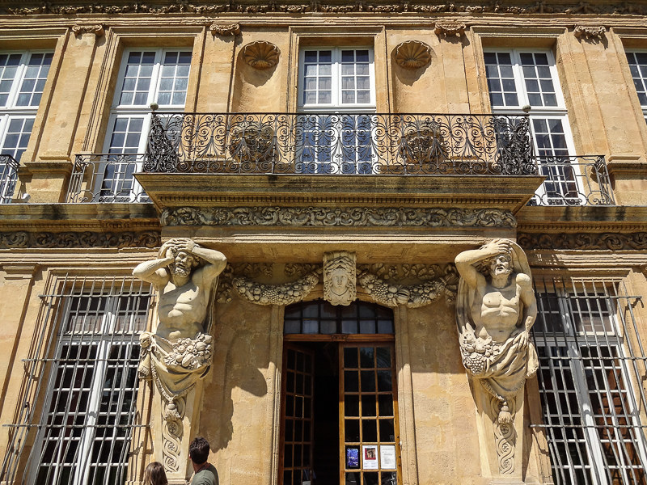
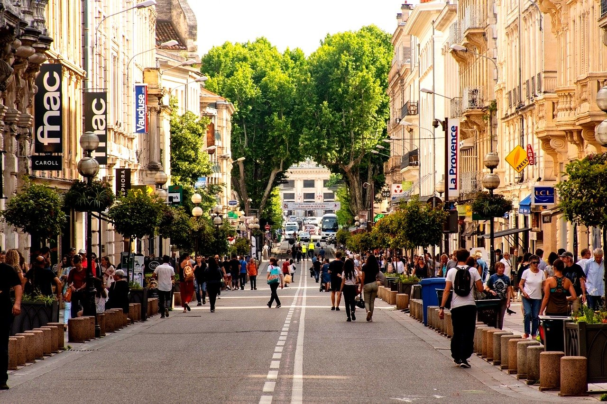
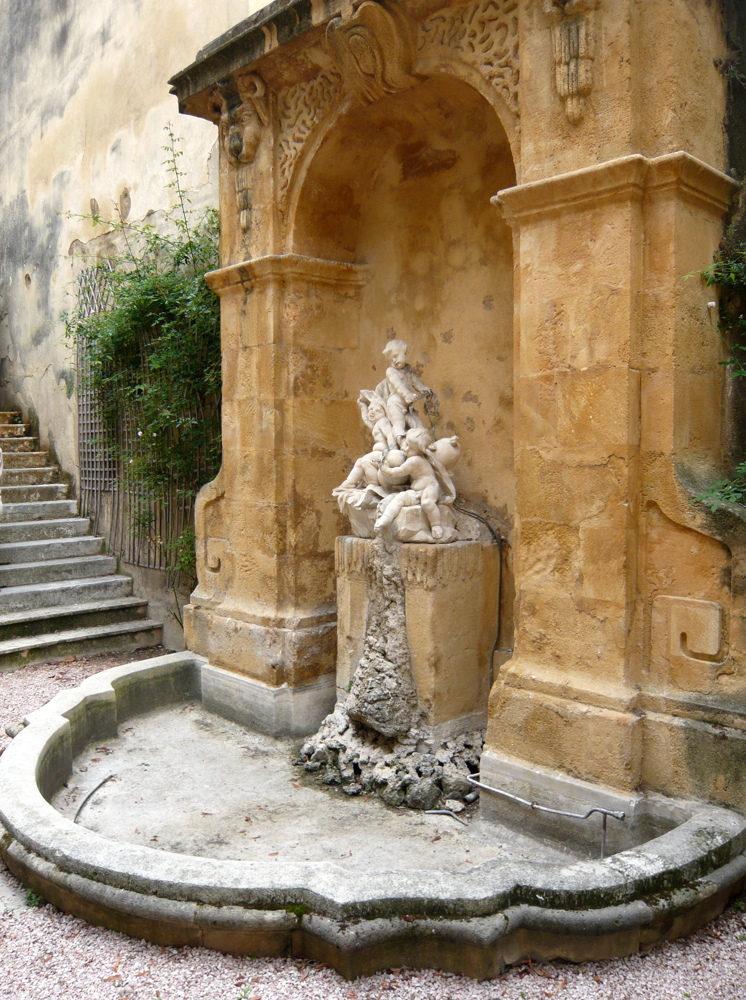

H I S T O R Y
Provence was actually a country of its own until it became part of France. Provence became part of France under the rule of King Louis XI. However, Provence was stilled allowed to keep their own parliament of some sort, although that din't go well, for a major War of Religions broke out in Provence in the 16th century. The battle was between Catholics and Protestents, but it came to an end in 1593 with Protestants given their rights.
However, that era of peace after the war ended in 1789 with the start of the French Revolution, causing major losses until Napoleon Bonaparte got the title of First Consul in 1799, and Emperor in 1804. The Industrial Revolution started, and Provence was peaceful and prosperous once again.
L I F E
Quality of life takes priority in Provence.Provence is a large place, but it is also a calm, and gentle place, as mostof the scenic landscapes show. France's second largest city, Marseille is located in Provence and is the areas capital, and with cities Nice and Cannes, the citylife in Provence is fun and fresh. The towns in Provence are quaint and historical, a walk through them provides a glance into history and a calm life.
Provence is also a reasonably fairly priced place, with exceptions such as major tourist spots. A lot of the food is local and fresh, since the ground is fertile and weather is good, and so food costs less in local markets. You will never have to worry about finding a fulfilling meal. Connections in Provence are also available, since it is a land full of different people and regions. The economy is also good.
C U L T U R E
Provence's culture can be seen all through Provence, such as in the food and architecture. There is a bunch of Roman Remains in Provence as Provence was once conquered by Rome in the first centruty BC. A stroll through the villages shows the culture of Provence, and the many religious sites also demonstrate times of the War of Religions.
Fashion was and is a big thing in Provence. Traditional Provence clothing include many colours and embroidery patterns, with a quelted skirt, shawl, wide-brimmed hat, and long apron around the waist, similar to other styling of traditional clothing in Europe.
E A T
- Enjoy fine cuisine of many cultures such as Indian, Thai, and Armenian food at the restaurants in Marseille
- Le Petit Nice - one of France's finest restaurant. Taste the equisite "Bouille-Abaisse," a three tier seafood delicacy
- Marseille's most charming restaurant, Chez Madie, sports fresh seafood
- Moulin a Huile - a restaurant of beauty, enjoy a river view and the tasteful Ventoux pork, Colombier pigeon, and baked sea trout
- Chrstian Etienne - the finest cuisine and views in Avignon
- Other popular foods that are a must try include: Bouillabaisse, Pastis, Daube, Tapenade and Soupe à l'oignon
P L A Y
- Avignon: Medieval City of the Popes. Enjoy a stroll through early 14th century architecture
- A must see are the beautiful lavender fields of Senanque Abby, Gordes
- Marseille's most charming restaurant, Chez Madie, sports fresh seafood
- Rent a boat and swim in the sparkling waters of the Gorges du Verdon
- Enjoy art from famous artists such as Pablo Picasso and Vincent Van Gogh at the Carrières de Lumières, Les Baux-de-Provence
- Cool down and walk through the beautiful red walls of Mines de Bruoux
S T A Y
- Hôtel Le Pigonnet 5 étoiles
- Villa Saint Ange, Hotel Luxury À Aix En Provence
- La Villa Gallici
- Boutique Hôtel Cézanne
- Château du Grand Jardin
- Monastère de Ségries